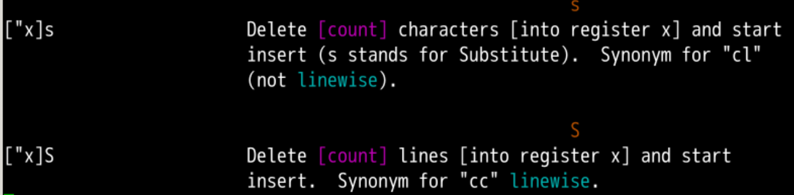
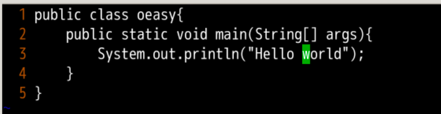
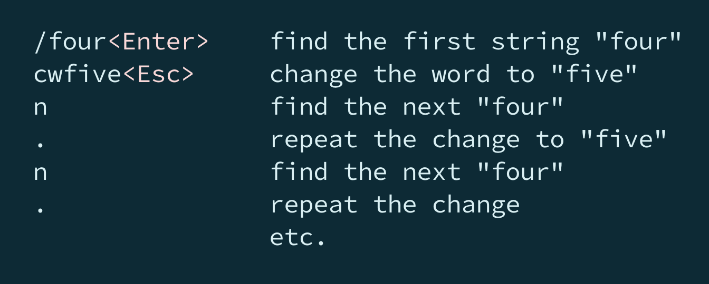
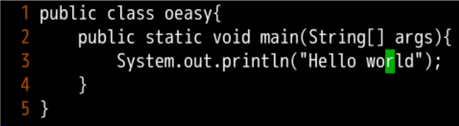
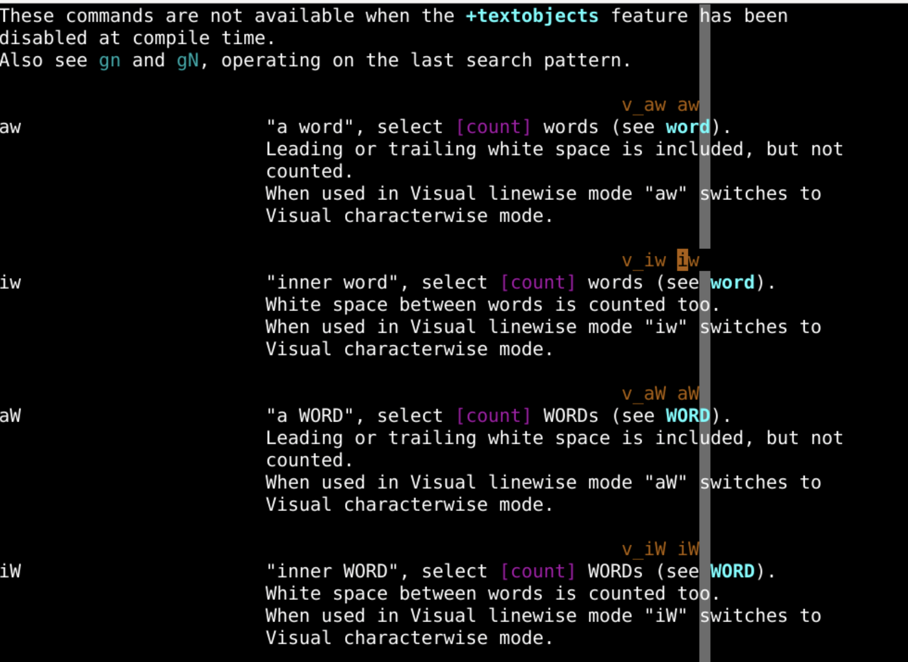
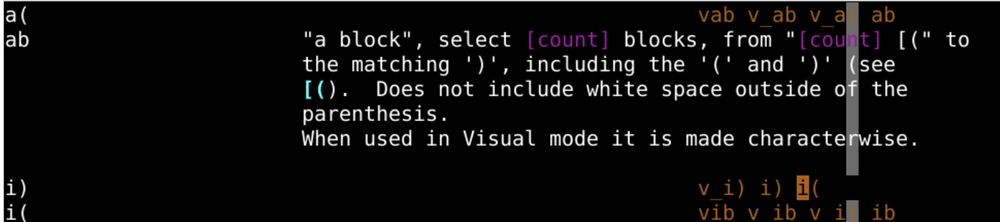
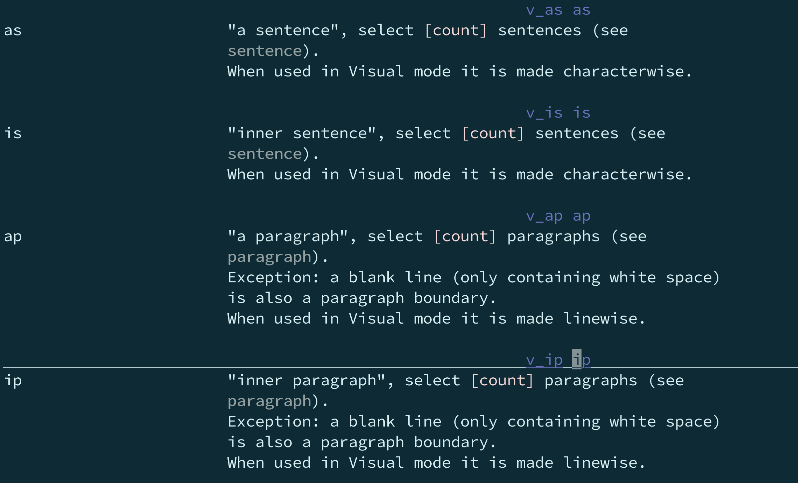
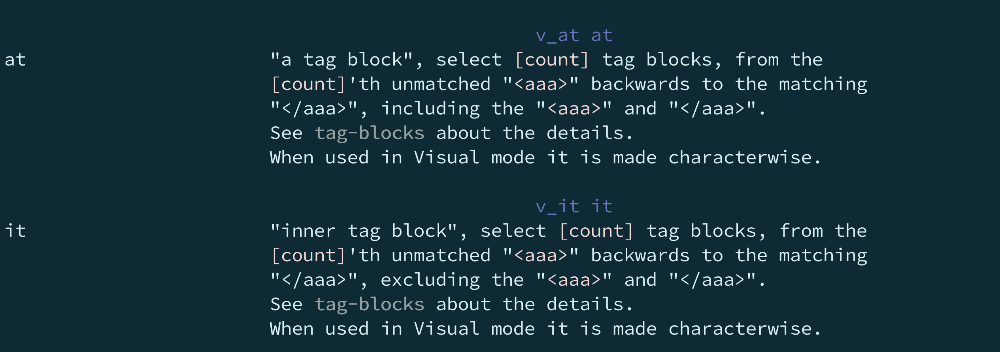
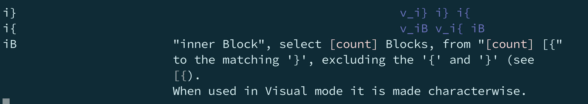

:reg"""0-"9"-"a-"z、"A-"Z":、".、"%". 里面存储着上次插入的内容"% 里面存储着当前文件的名字": 里面存储着刚刚执行的命令"#"="*、"+、"~"-"/:h s
""[count]翻倍普通模式插入模式因为很多时候删除了之后就是希望进入插入模式的！！！
S是删除当前这一行，然后进入插入模式
cc 的意思是change""[count]翻倍motion普通模式插入模式
hello world!变成hello oeasy


word 范围内的都可以删除ciW 意味着不是 word 而是 WORD

git clone http://gitee.com/overmind1980/oeasyvim.git
cd oeasyvim
vi oeasy.html
html、xml很有效率

i和a的整理h aw可以看到相关资料w word 小词W Word 大词s sentence 句子p paragraph 段落( 、) 小括号[ 、] 中括号{ 、} 大括号t tag 标签it 标签内部 不包含标签at 标签外部 包含标签"、' 引号s
S
C
cc就是
2C
motionw word 小词W Word 大词s sentence 句子p paragraph 段落( 、) 小括号[ 、] 中括号{ 、} 大括号t tag 标签it 标签内部 不包含标签at 标签外部 包含标签"、' 引号